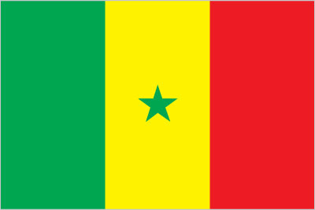
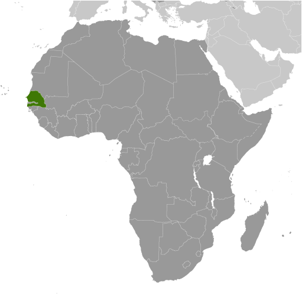
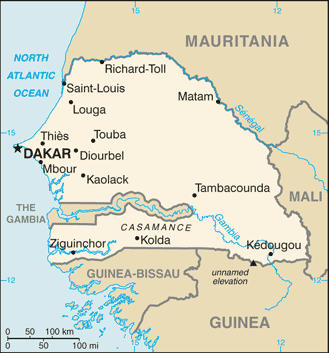

Africa :: SENEGAL
Introduction :: SENEGAL
-
The French colonies of Senegal and French Sudan were merged in 1959 and granted independence in 1960 as the Mali Federation. The union broke up after only a few months. Senegal joined with The Gambia to form the nominal confederation of Senegambia in 1982. The envisaged integration of the two countries was never implemented, and the union was dissolved in 1989. The Movement of Democratic Forces in the Casamance has led a low-level separatist insurgency in southern Senegal since the 1980s. Several peace deals have failed to resolve the conflict, but an unofficial cease-fire has remained largely in effect since 2012. Senegal remains one of the most stable democracies in Africa and has a long history of participating in international peacekeeping and regional mediation. Senegal was ruled by a Socialist Party for 40 years until Abdoulaye WADE was elected president in 2000. He was reelected in 2007 and during his two terms amended Senegal's constitution over a dozen times to increase executive power and weaken the opposition. His decision to run for a third presidential term sparked a large public backlash that led to his defeat in a March 2012 runoff with Macky SALL, whose term runs until 2019. A 2016 constitutional referendum reduced the term to five years with a maximum of two consecutive terms for future presidents.
Geography :: SENEGAL
-
Western Africa, bordering the North Atlantic Ocean, between Guinea-Bissau and Mauritania14 00 N, 14 00 WAfricatotal: 196,722 sq kmland: 192,530 sq kmwater: 4,192 sq kmcountry comparison to the world: 89slightly smaller than South Dakotatotal: 2,684 kmborder countries (5): The Gambia 749 km, Guinea 363 km, Guinea-Bissau 341 km, Mali 489 km, Mauritania 742 km531 kmterritorial sea: 12 nmcontiguous zone: 24 nmexclusive economic zone: 200 nmcontinental shelf: 200 nm or to the edge of the continental margintropical; hot, humid; rainy season (May to November) has strong southeast winds; dry season (December to April) dominated by hot, dry, harmattan windgenerally low, rolling, plains rising to foothills in southeastmean elevation: 69 melevation extremes: lowest point: Atlantic Ocean 0 mhighest point: unnamed elevation 2.8 km southeast of Nepen Diaka 648 mfish, phosphates, iron oreagricultural land: 46.8%arable land 17.4%; permanent crops 0.3%; permanent pasture 29.1%forest: 43.8%other: 9.4% (2011 est.)1,200 sq km (2012)the population is concentrated in the west, with Dakar anchoring a well-defined core area; approximately 70% of the population is rurallowlands seasonally flooded; periodic droughtswildlife populations threatened by poaching; deforestation; overgrazing; soil erosion; desertification; overfishingparty to: Biodiversity, Climate Change, Climate Change-Kyoto Protocol, Desertification, Endangered Species, Hazardous Wastes, Law of the Sea, Marine Life Conservation, Ozone Layer Protection, Ship Pollution, Wetlands, Whalingsigned, but not ratified: none of the selected agreementswesternmost country on the African continent; The Gambia is almost an enclave within Senegal
People and Society :: SENEGAL
-
14,668,522 (July 2017 est.)country comparison to the world: 71noun: Senegalese (singular and plural)adjective: SenegaleseWolof 38.6%, Pular 26.6%, Serer 14.9%, Mandinka 4.6%, Jola 4.1%, Soninke 2.3%, other 8.9% (includes Europeans and persons of Lebanese descent) (2010-11 est.)French (official), Wolof, Pular, Jola, Mandinka, Serer, SoninkeMuslim 95.4% (most adhere to one of the four main Sufi brotherhoods), Christian 4.2% (mostly Roman Catholic), animist 0.4% (2010-11 est.)Senegal has a large and growing youth population but has not been successful in developing its potential human capital. Senegal’s high total fertility rate of almost 4.5 children per woman continues to bolster the country’s large youth cohort – more than 60% of the population is under the age of 25. Fertility remains high because of the continued desire for large families, the low use of family planning, and early childbearing. Because of the country’s high illiteracy rate (more than 40%), high unemployment (even among university graduates), and widespread poverty, Senegalese youths face dim prospects; women are especially disadvantaged.Senegal historically was a destination country for economic migrants, but in recent years West African migrants more often use Senegal as a transit point to North Africa – and sometimes illegally onward to Europe. The country also has been host to several thousand black Mauritanian refugees since they were expelled from their homeland during its 1989 border conflict with Senegal. The country’s economic crisis in the 1970s stimulated emigration; departures accelerated in the 1990s. Destinations shifted from neighboring countries, which were experiencing economic decline, civil wars, and increasing xenophobia, to Libya and Mauritania because of their booming oil industries and to developed countries (most notably former colonial ruler France, as well as Italy and Spain). The latter became attractive in the 1990s because of job opportunities and their periodic regularization programs (legalizing the status of illegal migrants).Additionally, about 16,000 Senegalese refugees still remain in The Gambia and Guinea-Bissau as a result of more than 30 years of fighting between government forces and rebel separatists in southern Senegal’s Casamance region.0-14 years: 41.51% (male 3,060,118/female 3,028,975)15-24 years: 20.33% (male 1,486,393/female 1,496,393)25-54 years: 31.19% (male 2,102,757/female 2,472,683)55-64 years: 3.98% (male 251,673/female 332,113)65 years and over: 2.98% (male 194,491/female 242,926) (2017 est.)total dependency ratio: 85.4youth dependency ratio: 79.8elderly dependency ratio: 5.6potential support ratio: 18 (2015 est.)total: 18.8 yearsmale: 18 yearsfemale: 19.7 years (2017 est.)country comparison to the world: 2062.39% (2017 est.)country comparison to the world: 3033.4 births/1,000 population (2017 est.)country comparison to the world: 288.1 deaths/1,000 population (2017 est.)country comparison to the world: 90-1.5 migrant(s)/1,000 population (2017 est.)country comparison to the world: 150the population is concentrated in the west, with Dakar anchoring a well-defined core area; approximately 70% of the population is ruralurban population: 44.4% of total population (2017)rate of urbanization: 3.53% annual rate of change (2015-20 est.)DAKAR (capital) 3.52 million (2015)at birth: 1.03 male(s)/female0-14 years: 1.01 male(s)/female15-24 years: 0.99 male(s)/female25-54 years: 0.85 male(s)/female55-64 years: 0.76 male(s)/female65 years and over: 0.82 male(s)/femaletotal population: 0.94 male(s)/female (2016 est.)21.5 yearsnote: median age at first birth among women 25-29 (2016 est.)315 deaths/100,000 live births (2015 est.)country comparison to the world: 40total: 49.1 deaths/1,000 live birthsmale: 55 deaths/1,000 live birthsfemale: 43.1 deaths/1,000 live births (2017 est.)country comparison to the world: 32total population: 62.1 yearsmale: 60 yearsfemale: 64.3 years (2017 est.)country comparison to the world: 1994.28 children born/woman (2017 est.)country comparison to the world: 2923.3% (2015)4.7% of GDP (2014)country comparison to the world: 1500.06 physicians/1,000 population (2008)0.3 beds/1,000 population (2008)improved:urban: 92.9% of populationrural: 67.3% of populationtotal: 78.5% of populationunimproved:urban: 7.1% of populationrural: 32.7% of populationtotal: 21.5% of population (2015 est.)improved:urban: 65.4% of populationrural: 33.8% of populationtotal: 47.6% of populationunimproved:urban: 34.6% of populationrural: 66.2% of populationtotal: 52.4% of population (2015 est.)0.4% (2016 est.)country comparison to the world: 7941,000 (2016 est.)country comparison to the world: 611,900 (2016 est.)country comparison to the world: 53degree of risk: very highfood or waterborne diseases: bacterial and protozoal diarrhea, hepatitis A, and typhoid fevervectorborne diseases: malaria and dengue feverwater contact disease: schistosomiasisrespiratory disease: meningococcal meningitisanimal contact disease: rabies (2016)8.8% (2016)country comparison to the world: 14615.5% (2015)country comparison to the world: 407.2% of GDP (2014)country comparison to the world: 53definition: age 15 and over can read and writetotal population: 57.7%male: 69.7%female: 46.6% (2015 est.)total: 9 yearsmale: 9 yearsfemale: 9 years (2015)total: 12.7%male: 8.3%female: 19% (2011 est.)country comparison to the world: 77
Government :: SENEGAL
-
conventional long form: Republic of Senegalconventional short form: Senegallocal long form: Republique du Senegallocal short form: Senegalformer: Senegambia (along with The Gambia), Mali Federationetymology: named for the Senegal River that forms the northern border of the country; many theories exist for the origin of the river name; perhaps the most widely cited derives the name from "Azenegue," the Portuguese appellation for the Berber Zenaga people who lived north of the riverpresidential republicname: Dakargeographic coordinates: 14 44 N, 17 38 Wtime difference: UTC 0 (5 hours ahead of Washington, DC, during Standard Time)14 regions (regions, singular - region); Dakar, Diourbel, Fatick, Kaffrine, Kaolack, Kedougou, Kolda, Louga, Matam, Saint-Louis, Sedhiou, Tambacounda, Thies, Ziguinchor4 April 1960 (from France); note - complete independence achieved upon dissolution of federation with Mali on 20 August 1960Independence Day, 4 April (1960)history: previous 1959 (preindependence), 1963; latest adopted by referendum 7 January 2001, promulgated 22 January 2001amendments: proposed by the president of the republic, by the prime minister through the president, or by the National Assembly; passage requires Assembly approval and approval in a referendum; the president can bypass a referendum and submit an amendment directly to the Assembly, which requires at least three-fifths majority vote; the republican form of government is not amendable; amended several times, last in 2016 (2017)civil law system based on French law; judicial review of legislative acts in Constitutional Courtaccepts compulsory ICJ jurisdiction with reservations; accepts ICCt jurisdictioncitizenship by birth: nocitizenship by descent only: at least one parent must be a citizen of Senegaldual citizenship recognized: no, but Senegalese citizens do not automatically lose their citizenship if they acquire citizenship in another stateresidency requirement for naturalization: 5 years18 years of age; universalchief of state: President Macky SALL (since 2 April 2012)head of government: Prime Minister Mohammed Abdallah Boun DIONNE (since 4 July 2014)cabinet: Council of Ministers appointed by the prime minister in consultation with the presidentelections/appointments: president directly elected by absolute majority popular vote in 2 rounds if needed for a 5-year term (eligible for a second consecutive term); election last held on 26 February 2012 with a runoff on 25 March 2012 (next to be held in 2019); prime minister appointed by the presidentelection results: Macky SALL elected president in second round; percent of vote - Macky SALL (APR) 65.8%, Abdoulaye WADE (PDS) 34.2%description: unicameral National Assembly or Assemblee Nationale (165 seats; 105 members including 15 representing Senegalese diaspora directly elected by plurality vote in single- and multi-seat constituencies and 60 members directly elected by proportional representation vote in single- and multi-seat constituencies)elections: National Assembly - last held on 2 July 2017 (next to be held in July 2022)election results: National Assembly results - percent of vote by party/coalition - BBK 49.5%, CGWS 16.7%, MTS 11.7%, PUR 4.7%, CP-Kaddu Askan Wi 2%, other 15.4%; seats by party/coalition - BBY 125, CGWS 19, MTS 7, PUR 3, CP-Kaddu Askan Wi 2, other 9highest court(s): Supreme Court or Cour Supreme (consists of the president and 12 judges and organized into civil and commercial, criminal, administrative, and social chambers); Constitutional Council or Conseil Constitutionel (consists of 7 members including the court president, vice president, and 5 judges)judge selection and term of office: Supreme Court judges' appointed by the president of the republic upon recommendation of the Higher Council of the Judiciary, a body chaired by the president; judge tenure NA; Constitutional Council members appointed - 5 by the president and 2 by the National Assembly speaker to serve 6-year terms with the renewal of 2 members every 2 yearssubordinate courts: High Court of Justice (for crimes of high treason by the president); Courts of Appeal; Court of Auditors; assize courts; regional and district courts; Labor Court; note - in early 2013, the Extraordinary African Chambers were established by agreement of the African Union and the Government of Senegal to try cases of high-level officials involved in crimes committed in Chad during the period 1982-1990Alliance for the Republic-Yakaar or APR-Yakaar [Macky SALL]Alliance of Forces of Progress or AFP [Moustapha NIASSE]And-Jef/African Party for Democracy and Socialism or AJ/PADS [Mamadou DIOP Decriox]And-Jef/African Party for Democracy and Socialism or AJ/PADS-A [Landing SAVANE]Benno Bokk Yakaar or BBY (United in Hope) [Macky SALL] (coalition includes AFP, APR, LD-MPT, PIT, PS, UNP)Bokk Gis Gis coalition [Pape DIOP]Citizen Movement for National Reform or MCRN-Bes Du Nakk [Mansour Sy DJAMIL]Democratic League-Labor Party Movement or LD-MPT [Mamadou NDOYE]Front for Socialism and Democracy/Benno Jubel or FSD/BJ [Cheikh Abdoulaye Bamba DIEYE]Gainde Centrist Bloc or BGC [Jean-Paul DIAS]Grand Party or GP [Malick GAKOU]Independence and Labor Party or PIT [Magatte THIAM]Manko Taxawu Senegaal or MTS [Khalifa SALL] (coalition includes BGC, Du Nakk, FSD/BJ, GP, MCRN/Bes, Rewmi)National Union for the People or UNP [Souleymane Ndene NDIAYE]Party for Truth and Development or PVD [Cheikh Ahmadou Kara MBAKE]Party of Unity and Rally or PUR [El Hadji SALL]Patriotic Convergence Kaddu Askan Wi or CP-Kaddu Askan Wi [Abdoulaye BALDE]Reform Party or PR [Abdourahim AGNE]Rewmi Party [Idrissa SECK]Senegalese Democratic Party or PDS [Abdoulaye WADE]Socialist Party or PS [Ousmane Tanor DIENG]Tekki Movement [Mamadou Lamine DIALLO]Union for Democratic Renewal or URD [Djibo Leyti KA]Winning Coalition Wattu Senegal or CGWS [Abdoulaye WADE] (includes AJ/PADS, AJ/PADS-A, Bokk Gis Gis, PDS, Tekki Movement)Catholic clergy; labor; religious groups; students; Sufi brotherhoods, including the Mourides and Tidjanes; teachersACP, AfDB, AU, CD, CPLP (associate), ECOWAS, EITI (candidate country), FAO, FZ, G-15, G-77, IAEA, IBRD, ICAO, ICC (national committees), ICCt, ICRM, IDA, IDB, IFAD, IFC, IFRCS, ILO, IMF, IMO, IMSO, Interpol, IOC, IOM, IPU, ISO, ITSO, ITU, ITUC (NGOs), MIGA, MINUSMA, MONUSCO, NAM, OIC, OIF, OPCW, PCA, UN, UN Security Council (temporary), UNAMID, UNCTAD, UNESCO, UNHCR, UNIDO, UNMIL, UNMISS, UNOCI, UNWTO, UPU, WADB (regional), WAEMU, WCO, WFTU (NGOs), WHO, WIPO, WMO, WTOchief of mission: Ambassador Babacar DIAGNE (since 18 November 2014)chancery: 2215 M Street, NW, Washington, DC 20007telephone: [1] (202) 234-0540FAX: [1] (202) 629-2961consulate(s) general: Houston, New Yorkchief of mission: ambassador Tulinabo S. MUSHINGI (since August 2017); note - also accredited to Guinea-Bissauembassy: Route des Almadies, Dakarmailing address: B.P. 49, Dakartelephone: [221] 33-879-4000FAX: [221] 33-822-2991three equal vertical bands of green (hoist side), yellow, and red with a small green five-pointed star centered in the yellow band; green represents Islam, progress, and hope; yellow signifies natural wealth and progress; red symbolizes sacrifice and determination; the star denotes unity and hopenote: uses the popular Pan-African colors of Ethiopia; the colors from left to right are the same as those of neighboring Mali and the reverse of those on the flag of neighboring Guinealion; national colors: green, yellow, redname: "Pincez Tous vos Koras, Frappez les Balafons" (Pluck Your Koras, Strike the Balafons)lyrics/music: Leopold Sedar SENGHOR/Herbert PEPPERnote: adopted 1960; lyrics written by Leopold Sedar SENGHOR, Senegal's first president; the anthem sometimes played incorporating the Koras (harp-like stringed instruments) and Balafons (types of xylophones) mentioned in the title
Economy :: SENEGAL
-
Senegal’s economy is driven by mining, construction, tourism, fisheries and agriculture, which are the primary sources of employment in rural areas. The country's key export industries include phosphate mining, fertilizer production, agricultural products and commercial fishing and it is also working on oil exploration projects. Senegal relies heavily on donor assistance, remittances and foreign direct investment. For the first time in the past 12 years, Senegal reached a growth rate of 6.5% in 2015 and surpassed 6.6% in 2016, due in part to a buoyant performance in agriculture because of higher rainfall and productivity in the sector.President Macky SALL, who was elected in March 2012 under a reformist policy agenda, inherited an economy with high energy costs, a challenging business environment, and a culture of overspending. President SALL unveiled an ambitious economic plan, the Emerging Senegal Plan (ESP), which aims to implement priority economic reforms and investment projects to increase economic growth while preserving macroeconomic stability and debt sustainability. Bureaucratic bottlenecks and a challenging business climate are among the perennial challenges that may slow the implementation of this plan.Senegal is receiving technical support from the IMF during 2015-17 under a Policy Support Instrument (PSI) to assist with implementation of the ESP. The PSI implementation continues to be satisfactory as concluded by the IMF’s second review mission in March 2016. Investors have signaled confidence in the country through Senegal’s successful Eurobond issuances in recent years, including in 2014.The government will focus on 19 projects under the ESP for the 2016 budget to continue the structural transformation of the economy. These 19 projects include the Thies-Touba Highway, including the new airport- Mbour-Thies Highway. Senegal will increase the national family allowances program and the community development emergency program in 2016. Electricity supply is a chief constraint for Senegal’s development. Electricity prices in Senegal are among the highest in the world. Power Africa, a program led by USAID and OPIC, plans to increase the current 500 MW of generating capacity to over 1,000 mW in the next three to five years. Recent gas discoveries on the Senegal-Mauritanian border, as well as just south of Dakar, will help alleviate some of the energy shortages.$39.64 billion (2016 est.)$36.67 billion (2015 est.)$34.07 billion (2014 est.)note: data are in 2016 dollarscountry comparison to the world: 115$14.72 billion (2016 est.)6.7% (2016 est.)6.5% (2015 est.)4.1% (2014 est.)country comparison to the world: 18$2,500 (2016 est.)$2,500 (2015 est.)$2,400 (2014 est.)note: data are in 2016 dollarscountry comparison to the world: 19621.5% of GDP (2016 est.)17.7% of GDP (2015 est.)15.5% of GDP (2014 est.)country comparison to the world: 115household consumption: 76.7%government consumption: 16.2%investment in fixed capital: 26%investment in inventories: -2%exports of goods and services: 29.1%imports of goods and services: -45.9% (2016 est.)agriculture: 17.2%industry: 23.7%services: 59% (2016 est.)peanuts, millet, corn, sorghum, rice, cotton, tomatoes, green vegetables; cattle, poultry, pigs; fishagricultural and fish processing, phosphate mining, fertilizer production, petroleum refining, zircon, and gold mining, construction materials, ship construction and repair8% (2016 est.)country comparison to the world: 176.737 million (2016 est.)country comparison to the world: 68agriculture: 77.5%industry and services: 22.5% (2007 est.)48% (2007 est.)country comparison to the world: 21346.7% (2011 est.)lowest 10%: 2.5%highest 10%: 31.1% (2011)40.3 (2011)country comparison to the world: 59revenues: $3.906 billionexpenditures: $4.535 billion (2016 est.)26.4% of GDP (2016 est.)country comparison to the world: 110-4.3% of GDP (2016 est.)country comparison to the world: 14458.6% of GDP (2016 est.)58.1% of GDP (2015 est.)country comparison to the world: 77calendar year0.9% (2016 est.)0.1% (2015 est.)country comparison to the world: 790.25% (31 December 2010)4.25% (31 December 2009)country comparison to the world: 14216.4% (31 December 2016 est.)16.41% (31 December 2015 est.)country comparison to the world: 31$4.736 billion (31 December 2016 est.)$4.264 billion (31 December 2015 est.)country comparison to the world: 103$7.244 billion (31 December 2016 est.)$6.549 billion (31 December 2015 est.)country comparison to the world: 113$5.15 billion (31 December 2016 est.)$4.867 billion (31 December 2015 est.)country comparison to the world: 126$NA$-783 million (2016 est.)$-1.216 billion (2015 est.)country comparison to the world: 122$2.498 billion (2016 est.)$2.31 billion (2015 est.)country comparison to the world: 132fish, groundnuts (peanuts), petroleum products, phosphates, cottonMali 18.2%, Switzerland 10.6%, India 8.2%, Cote dIvoire 5.3%, China 5% (2016)$4.993 billion (2016 est.)$4.918 billion (2015 est.)country comparison to the world: 122food and beverages, capital goods, fuelsFrance 15.9%, China 10.3%, Nigeria 7.8%, India 7.6%, Netherlands 5.3%, Spain 4.9% (2016)$116.9 million (31 December 2016 est.)$153.6 million (31 December 2015 est.)country comparison to the world: 163$6.327 billion (31 December 2016 est.)$5.893 billion (31 December 2015 est.)country comparison to the world: 126Communaute Financiere Africaine francs (XOF) per US dollar -593.01 (2016 est.)593.01 (2015 est.)591.45 (2014 est.)494.42 (2013 est.)510.53 (2012 est.)
Energy :: SENEGAL
-
population without electricity: 6,400,000electrification - total population: 55%electrification - urban areas: 90%electrification - rural areas: 28% (2013)3.673 billion kWh (2015 est.)country comparison to the world: 1273.014 billion kWh (2015 est.)country comparison to the world: 1350 kWh (2016 est.)country comparison to the world: 1940 kWh (2016 est.)country comparison to the world: 198965,000 kW (2015 est.)country comparison to the world: 12988.5% of total installed capacity (2015 est.)country comparison to the world: 640% of total installed capacity (2015 est.)country comparison to the world: 1797.8% of total installed capacity (2015 est.)country comparison to the world: 1238.2% of total installed capacity (2015 est.)country comparison to the world: 760 bbl/day (2016 est.)country comparison to the world: 1910 bbl/day (2014 est.)country comparison to the world: 18718,060 bbl/day (2014 est.)country comparison to the world: 660 bbl (1 January 2017 es)country comparison to the world: 18916,850 bbl/day (2014 est.)country comparison to the world: 9244,000 bbl/day (2015 est.)country comparison to the world: 1093,892 bbl/day (2014 est.)country comparison to the world: 10130,120 bbl/day (2014 est.)country comparison to the world: 10262 million cu m (2015 est.)country comparison to the world: 86497 million cu m (2015 est.)country comparison to the world: 1070 cu m (2013 est.)country comparison to the world: 1790 cu m (2013 est.)country comparison to the world: 1859.911 billion cu m (1 January 2012 es)country comparison to the world: 837.3 million Mt (2013 est.)country comparison to the world: 117
Communications :: SENEGAL
-
total subscriptions: 285,933subscriptions per 100 inhabitants: 2 (July 2016 est.)country comparison to the world: 115total: 15,186,485subscriptions per 100 inhabitants: 106 (July 2016 est.)country comparison to the world: 67general assessment: good system with microwave radio relay, coaxial cable and fiber-optic cable in trunk systemdomestic: generally reliable urban system with a fiber-optic network; about two-thirds of all fixed-line connections are in Dakar; mobile-cellular service is steadily displacing fixed-line service, even in urban areasinternational: country code - 221; the ACE fiber-optic cable connects Senegal to Europe, the SAT-3/WASC provides fiber-optic connectivity to Europe and Asia, and Atlantis-2 provides connectivity to South America; satellite earth station - 1 Intelsat (Atlantic Ocean) (2017)state-run Radiodiffusion Television Senegalaise (RTS) broadcasts TV programs from five cities in Senegal; in most regions of the country, viewers can receive TV programming from at least 7 private broadcasters; a wide range of independent TV programming is available via satellite; RTS operates a national radio network and a number of regional FM stations; at least 7 community radio stations and 18 private-broadcast radio stations are available; transmissions of at least 5 international broadcasters are accessible on FM in Dakar (2017).sntotal: 3,675,209percent of population: 25.7% (July 2016 est.)country comparison to the world: 84
Transportation :: SENEGAL
-
number of registered air carriers:inventory of registered aircraft operated by air carriers:annual passenger traffic on registered air carriers: 115,355annual freight traffic on registered air carriers: 3,095,523 mt-km (2015)6V (2016)20 (2013)country comparison to the world: 136total: 9over 3,047 m: 21,524 to 2,437 m: 6914 to 1,523 m: 1 (2017)total: 111,524 to 2,437 m: 7914 to 1,523 m: 3under 914 m: 1 (2013)gas 43 km; refined products 8 km (2017)total: 906 km (713 km operational in 2017)narrow gauge: 906 km 1.000-m gauge (2017)country comparison to the world: 93total: 16,496 kmpaved: 5,957 km (includes 72 km of expressways)unpaved: 10,539 km (2017)country comparison to the world: 1241,000 km (primarily on the Senegal, Saloum, and Casamance Rivers) (2012)country comparison to the world: 64total: 9by type: passenger 7, cargo 2note: excludes numerous oceangoing pirogues operating in Senegal's coastal waters and rivers (2017)country comparison to the world: 119major seaport(s): Dakar
Military and Security :: SENEGAL
-
1.89% of GDP (2017 est.)1.73% of GDP (2016)1.58% of GDP (2015)1.57% of GDP (2014)1.6% of GDP (2013)Senegalese Armed Forces: Army, Senegalese National Navy (Marine Senegalaise, MNS), Senegalese Air Force (Armee de l'Air du Senegal) (2017)18 years of age for voluntary military service; 20 years of age for selective conscript service; 2-year service obligation; women have been accepted into military service since 2008 (2013)
Transnational Issues :: SENEGAL
-
cross-border trafficking in persons, timber, wildlife, and cannabis; rebels from the Movement of Democratic Forces in the Casamance find refuge in Guinea-Bissaurefugees (country of origin): 13,683 (Mauritania) (2017)IDPs: 24,000 (clashes between government troops and separatists in Casamance region) (2016)transshipment point for Southwest and Southeast Asian heroin and South American cocaine moving to Europe and North America; illicit cultivator of cannabis